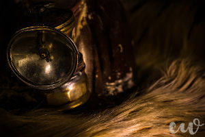
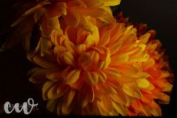

Macro
Macro photography can capture absolutely stunning shots. All it takes is some creativity and patience. This type of photography takes time as the photographer waits for the just the right exposure and focus. Sometimes in a macro photography, the viewer cannot see what the big picture is. However, the image is still so incredible as it is so close.


Be sure to check out our most popular prints lately!